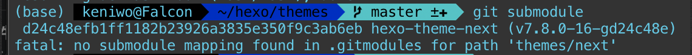
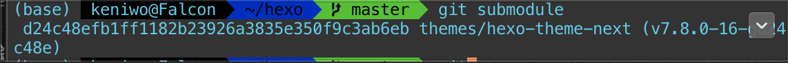

本次hexo项目从老mac迁移到新mac上遇到的问题种种
git子模块的相关问题
主要是/hexo/themes/下的主题dir的git提交问题。由于我最开始是直接从主题的github repo页面上拉下来的，当时对git的理解还不够深入，
https://www.hozen.site/archives/23/
我的做法：
· 重新fork了一下 hexo-theme-next
· 把它添加到了我的子模块
· 直接mv -d 了原有的next模块
· 从mbp2015上拷贝了config.yml，并更改主题名为hexo-theme-next
（此处复习一下vim前后段尾是{ , }两个键 ）
但在我做完以上步骤之后，git submodule

这应该是原来旧版本里面还留着上个next主题的submodule配置信息。
查询csdn，删除子模块的步骤
有时子模块的项目维护地址发生了变化，或者需要替换子模块，就需要删除原有的子模块。
删除子模块较复杂，步骤如下：
· rm -rf 子模块目录 删除子模块目录及源码
· vi .gitmodules 删除项目目录下.gitmodules文件中子模块相关条目
· vi .git/config 删除配置项中子模块相关条目
· rm .git/module/* 删除模块下的子模块目录，每个子模块对应一个目录，注意只删除对应的子模块目录即可
此时我再执行以上步骤之前，重新add, commit了一次，再查看以上配置文件，均没有老next的记录了。
再运行一次git submodule

恢复。
2.node v14弹warning
这个很无解，好像是stylus的问题，我难得再去debug了，选择直接回滚到v12。
1 | sudo n 12.18.2 |
要注意的是好像也会node_module里面的hexo依赖包也会在node版本回滚之后出现问题，要重新装一遍，这里我记得似乎是终端会自动弹出一个warning和建议重装的命令，直接复制了执行之后就ok了。
3.关于git log
这个就太好笑了，我把上面的破事处理完之后直接部署到github pages然后发现我的博文只更新到了今年7月份，后面的新文章都🈚️了，最后发现是我用git log回滚了版本，然后git log返回的提交记录在终端显示的时间顺序居然是从下往上，最上面是最新的提交（因为命令行返回信息之后，等待输入的新行肯定是跟最下面的一行最接近，理所应当的应该让最下面的一条记录显示最新版本才对吧）。就这样我的所有博文直接回到了7月。
4.one more thing: post的最后编辑时间。
还有一个很让人头疼的事，每次迁移hexo项目之后，所有博文的最后编辑时间都会变成迁移的时间，尽管你并未做任何修改，这就又让人迷惑，又让真实的最后编辑时间消失了。这个问题我还没去解决，大概搜索了一下，贴个链接 。
ps. 目前（2020.12.3）使用的主题cactus好像并没有贴出博文的最后编辑时间，所以可以先不用管这个问题……